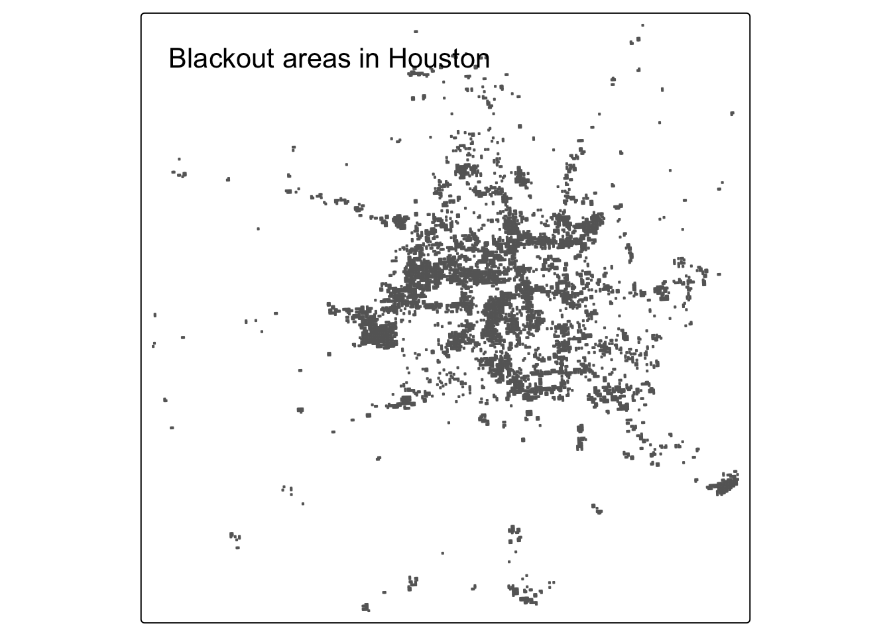
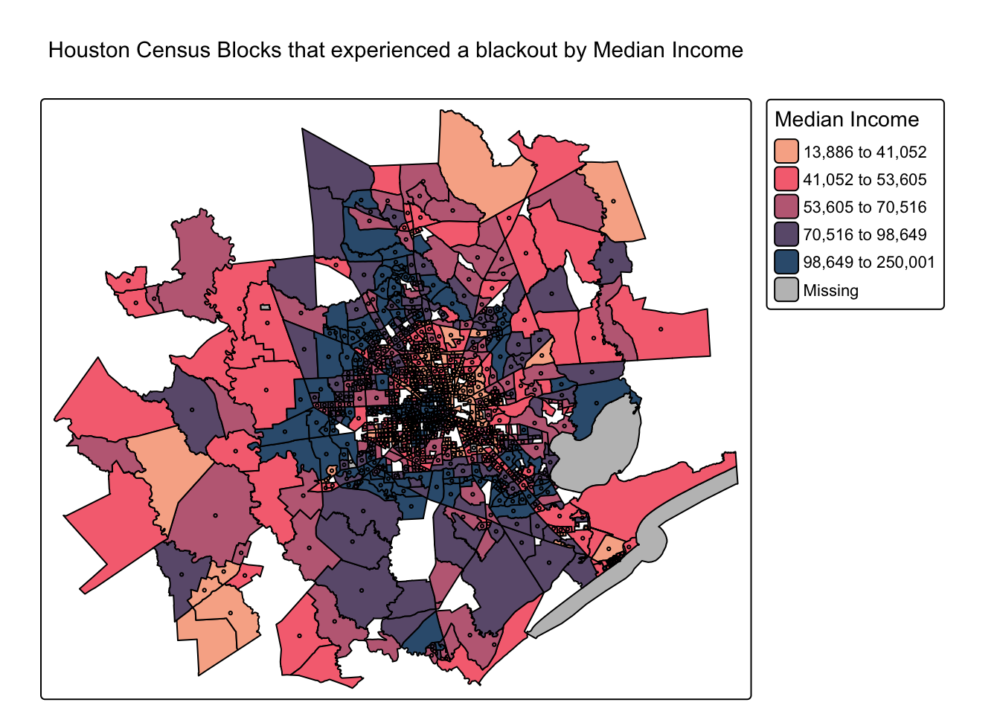

Background
Houston, we have a problem.
“In February 2021, the state of Texas suffered a major power crisis, which came about as a result of three severe winter storms sweeping across the United States on February 10–11, 13–17, and 15–20.”1. Because Texas is on its own power grid, it was not able to easily get access to power from other states.Therefore, it felt the effects of this winter storm at a much more servere rate than neighboring states that were experiencing the same exact storm. Some buildings lost power for five days straight, affecting a total of 4 million Texans.
Overview
I will utilize a few different datasets to attempt to determine just how many buildings lost power in this storm. To classify the number of houses, I am going to use satelite data from before/ during the outage. I will focus specifically on Houston. I will first estimate the number of homes in Houston that lost power due to the storm, and then will explore if socioeconomic factors are predictors of communities recovery from a power outage.
Data
Night lights data
I will sse NASA’s Worldview to explore the data around the day of the storm. There are several days with too much cloud cover to be useful, but 2021-02-07 and 2021-02-16 provide two clear, contrasting images to visualize the extent of the power outage in Texas. Additionally, I will utilize VIIRS data, which is distributed through NASA’s Level-1 and Atmospheric Archive & Distribution System Distributed Active Archive Center (LAADS DAAC). Many NASA Earth data products are distributed in 10x10 degree tiles in sinusoidal equal-area projection. Tiles are identified by their horizontal and vertical position in the grid. Datasets that were previously prepped and cleaned will be utilized.
VNP46A1.A2021038.h08v05.001.2021039064328.h5.tif: tile h08v05, collected on 2021-02-07VNP46A1.A2021038.h08v06.001.2021039064329.h5.tif: tile h08v06, collected on 2021-02-07VNP46A1.A2021047.h08v05.001.2021048091106.h5.tif: tile h08v05, collected on 2021-02-16VNP46A1.A2021047.h08v06.001.2021048091105.h5.tif: tile h08v06, collected on 2021-02-16
Road data
To prevent misrepresenting roads as building lights, I will utilize this road dataset. OpenStreetMap (OSM) is a collaborative project which creates publicly available geographic data of the world. Ingesting this data into a database where it can be subsetted and processed is a large undertaking. Fortunately, third party companies redistribute OSM data. I will use a prepared Geopackage containing just the subset of roads that intersect the Houston metropolitan area that got the data from Geofabrik’s download sites.
gis_osm_roads_free_1.gpkg
House data
I can also obtain building data from OpenStreetMap to quantiy where the houses in Houston are. I will once again be using a preloaded package containing only houses in the Houston metropolitan area, with data coming from Geofabrick.
gis_osm_buildings_a_free_1.gpkg
Socioeconomic data
Socioeconomic information for every home is not readily available, so instead I obtained data from the U.S. Census Bureau’s American Community Survey for census tracts in 2019. The folder ACS_2019_5YR_TRACT_48.gdb is an ArcGIS “file geodatabase”, a multi-file proprietary format that’s roughly analogous to a GeoPackage file. Each layer of the geodatabase contains a subset of the fields documents in the ACS metadata. The geodatabase contains a layer holding the geometry information, separate from the layers holding the ACS attributes.
Now that the data have been reviewed, here is a preview into the steps I will be taking!
- Find locations that experienced a blackout of more than 200 nW cm-2sr-1
- Exclude highways that are within 200 meters of homes
- Find number of homes that experienced a blackout with given the two conditions mentioned above
- Compare blackout areas with socioecnomic factors to see if there is any correlation
Analysis
Find locations of blackouts
Let’s first explore the effect the storm had on all of Houston in terms of outages. We will classify any drop of more than 200 nW cm-2sr-1 to be considered a blackout.
This image shows the areas that experienced a blackout of more than 200 nW cm-2sr-1 in Houston between February 7th and February 16th. These points are in the general vacinity of Houston and includes far beyond just buildings. This raster is a starting point and we will use it to select homes as a next step.
Exclude highways from blackout mask
Since we want to exclude highways so that we are not including them as houses to be counted, we can create a buffer of 200 meters from all highways and then disjoin the buffer and the previous vectorized blackout data to exclude the buffered area. Therefore, we will only be including houses that are at least 200 meters away from a highway. As a reminder, we are going to use EPSG:3083 (NAD83 / Texas Centric Albers Equal Area) for all areas of interest in this analysis.
Setting a buffer of 200 meters around houses means that any house that is within 200 meters of a highway will not be included in our analysis. This is because highways give off a lot of light from cars on the road. We want to be sure that the light we are picking up when trying to quantify the number of houses that experienced a blackout is starting with homes and not highways.
Find homes impacted by blackouts
I will now account for the homes within the new selected area. I can do so by filtering to areas in our most recent highway_mask vector. Doing so will give me buildings in Houston that experienced a drop of more than 200 nW cm-2sr-1 in areas that are farther than 200 meters from a highway. The number of houses can be obtained simply by counting the number of rows in my newly filtered buildings dataframe.
[1] "157411 houses experienced a blackout in Houston, Texas."Investigate socioeconomic factors
I will now utilize the acs data to see if there is any relationship between blackout areas and different socioecnomic factors. Specifically, I looked to see if the outages were at all related to the median income. I will classify the NA buiding value ( buildings that did not experienced a drop of 200 nW cm-2sr-1) as No Blackout. From there, I can check to see if there are any differences in median values among tracts with a blackout versus tracts without a blackout. I’ll first create a map to visual median incomes across the county of Houston. I will add a centroid for each census group that experienced a blackout.

Results and Limitations
The map, histogram, and hypothesis testing above all point to median income not playing a role in predicting whether a house experienced a blackout or not. This study did not consider the fact that there may be more homes in lower income census tracts than higher income census tracts, and therefore we cannot make accurate findings from points on a map. The exclusion of homes within 200 meters could also disproportionately exclude lower median income homes. The study also did not account for the fact that moon could have been providing a lot of light on Febuary 7th, and we could have misclassified houses to begin with. Finally, the study only looked at median income and not any other socioecnomic factors. It could be that there is a different socioeconomic factor that is much more correlated with experiencing a blackout.
This goal of this investigation was to become more familiar with spatial data and attempt to roughly quantify homes that experienced a blackout with satelittle data alone. The results of this analysis are not final and should not be cited.
Two years later, Texas has still not recovered from the 2021 storm
Two years and billions of dollars later, Texas has somewhat recovered from the damage done by the 2021 storm and power outages, but it is not back to where it stood prior to the storm, especially in terms of the energy grid. Work has been done to make more energy vailable and make the grid better suited for extreme weather, but reporters claim that if an identical storm to that of Febuary 2021 were to hit right now, the energy grid would once again fail. Policy makers hope to bring about changes that would change Texas’ grid. The policy changes proposed so far include favoring fossil fuel producers and big energy companies2. While the status of the Texas grid has not changed, Texans have become more prepared for future storms by purchasing generators and supplies to hold them through a storm/outage.
Footnotes
Wikipedia. 2021. “2021 Texas power crisis.” Last modified October 2, 2021. https://en.wikipedia.org/wiki/2021_Texas_power_crisis.↩︎
KUT.org. 2023.”Two years later: The 2021 blackout still shapes what it means to live in Texas.” https://www.kut.org/energy-environment/2023-02-17/two-years-later-the-2021-blackout-still-shapes-what-it-means-to-live-in-texas↩︎